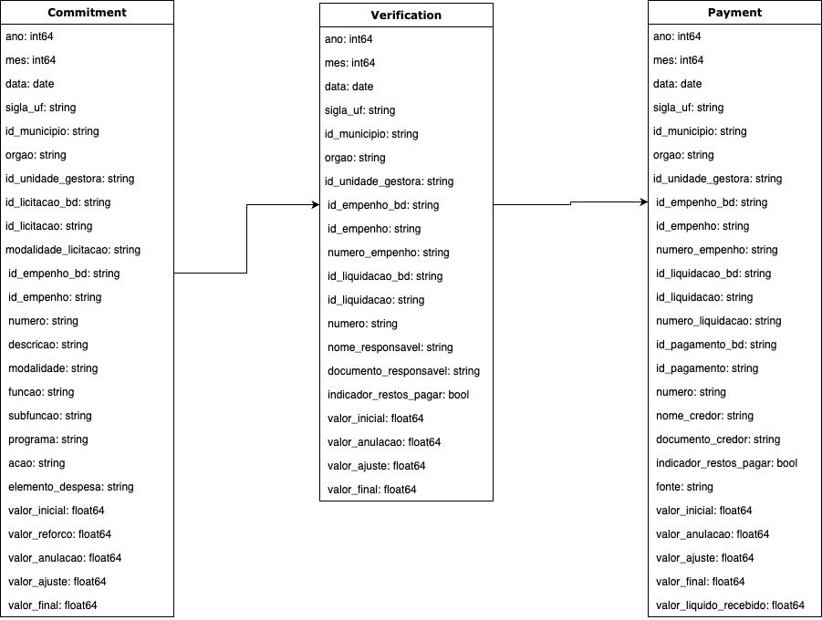
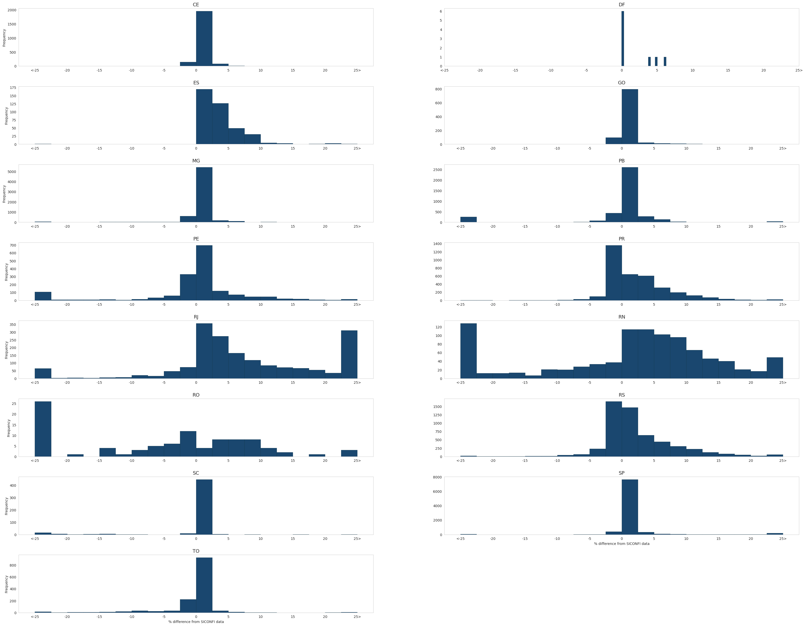

Budget Execution
Budget execution refers to the implementation of the annual budget that is approved by the local legislature. While much of the analytical work presented in this paper focuses on budget execution of public procurement, the tables on budget execution include all activities performed by municipalities, including payment of salaries, transfers, and others1.
The budget execution process in Brazil is similar to that in other countries2. It consists of three distinct steps: commitment, verification, and payment. The commitment (empenho) phase is the moment when governments set aside part of the budget appropriated to them for a specific activity, such as buying goods from a supplier or paying salaries of health workers. From a budgetary perspective, this is often seen as the moment an expenditure is recognized, since committed amounts are deducted from the budget appropriation. The second step of the budget execution is the verification (liquidação). It occurs when the government acknowledges that a certain service or good has been provided. This is the equivalent of recognizing a debt with a provider and is considered an expenditure from an accrual accounting point of view. In fact, if an expenditure was verified but not paid, it is recorded as accounts payable (restos a pagar processados), and, as with firms, increases in this amount might reflect a deterioration in the ability of governments to meet short-term obligations3. The final step of the budget execution is the payment (pagamento), when governments transfer the money to their suppliers.
Data
Our municipal budget execution dataset is organized into three tables: commitment, verification, and payment.
In the commitment table, one observation is a commitment by one agency in a given municipality. Commitments vary from very large expenses, such as the commitment for the entire wage bill of the mayor's office in a month, to very specific commitments such as the acquisition of replacement parts for a car. Each commitment is often linked to four levels of "functional programming" that map the nature of a commitment (such as Transportation > Road Transportation > Road Recovery > Recovery of a specific road in a given street), as well as a text that explicitly describes the nature of the commitment4. After an initial commitment, officials can increase or decrease the amounts committed as well as annul them. Across municipalities in our dataset, the quality of tracking these actions after initial commitment varies, but we include initial, increases, annulments, adjustments, and net amounts for each commitment when these are available. Each commitment is also linked to a unique identifier (id_empenho_bd) that allows users to connect a commitment to verification and payments linked to them.

Figure 1: Budget Execution flowchart
In the verification table, observations are verifications by some agency in a given municipality, which are always linked to a specific commitment. The key information available for each verification is the date when they happen, the initial value verified, any adjustments to the original value and the final value. One commitment might generate one or more verifications, so each verification is uniquely identified by the variable id_liquidacao_bd and can be connected to commitments by the variable id_empenho_bd.
Finally, for the payment table, each observation is a payment made to a specific entity. Payments can often (but not always) be linked back to a specific verification. The key information available in the payments table is the date of payment and values. The dataset also includes variables with the names and "document number" of payees - these are often unique national identifiers for individuals (CPF) and firms (CNPJ) but are not available for all payments or municipalities. Again, one verification event can lead to one or multiple payments, so payments are uniquely identified by the variable id_pagamento_bd and can be linked back to verification events by id_liquidacao_bd and to commitments by id_empenho_bd.
More details on the data architecture with information about the variables, including the original data from each state, can be found at mides/auxiliary_files/architecture
Descriptive statistics
Statistics for the budget execution dataset are presented in Tabela 1. Our budget execution dataset includes over 880 million observations - over 250 million commitments, around 300 million verifications and over 300 million payments. For all three stages of the budget execution, we present the total number of observations and the total number of distinct events - in some cases, we are unable to assess whether two commitment observations, for example, refer to the same commitment or not. In those cases, we set our respective identifier variable to missing to flag to users that we are unsure whether these are unique events that can be tracked across datasets. Using the budget classification discussed previously, we estimate that between 25%-35% of total budget commitment events are related to the procurement of goods and materials - this is a sample we exploit in more detail in the coming Sections. We also show that for an overwhelming proportion of commitments values are non-zero and can be matched to some verification and payment - allowing us to track the entire cycle of budget execution. We also highlight that our dataset currently encompasses over 3.5 trillion BRL in payments (in 2021 prices) or the equivalent of 38% of GDP in 2021, made to over 9 million different unique agents (identified by national tax IDs).
| CE | DF | MG | PB | PE | PR | RJ | RS | SC | SP | Total | |
|---|---|---|---|---|---|---|---|---|---|---|---|
| Commitments | |||||||||||
| Observations | 7,634,745 | 870,042 | 39,015,657 | 20,323,928 | 8,338,666 | 35,792,154 | 13,335,395 | 77,116,438 | 7,658,152 | 93,043,077 | 303,128,254 |
| Distinct commitments | 7,634,743 | 870,042 | 39,015,657 | 20,319,861 | - | 35,792,154 | 9,990,998 | 52,333,090 | 7,559,354 | 92,046,726 | 265,562,625 |
| Related to procurements (%) | 26.7 | 23.8 | 30.3 | 19.1 | 19.9 | 29.3 | 26.1 | 26.6 | 0.3 | 31.3 | 27.8 |
| Greather than zero (%) | 97.8 | 86.0 | 96.5 | 98.7 | 95.9 | 96.9 | 87.3 | 96.4 | 95.8 | 95.6 | 95.7 |
| Has verification information (%) | 96.0 | 68.6 | 95.0 | 63.0 | - | 98.0 | 88.9 | 97.0 | 100.0 | 96.8 | 92.3 |
| Has payment information (%) | 92.0 | 14.3 | 89.0 | 95.0 | - | 97.0 | 88.7 | 96.0 | 100.0 | 92.1 | 89.5 |
| Verifications | |||||||||||
| Observations | 15,189,831 | 2,743,609 | 63,757,882 | 13,787,845 | 15,229,631 | 40,457,210 | 13,958,112 | 65,789,353 | 7,658,152 | 90,086,651 | 328,658,276 |
| Distinct verifications | - | 274,2081 | 63,753,322 | - | - | 40,457,210 | 1,031,606 | 34,941,675 | - | 87,926,566 | 230,852,460 |
| Payments | |||||||||||
| Observations | 13,930,424 | 4,831,978 | 64,127,137 | 22,113,067 | 21,449,922 | 52,545,469 | 15,075,127 | 74,023,098 | 7,658,152 | 85,597,392 | 361,351,766 |
| Distinct payments | 13,243,955 | 1,067,900 | 64,127,137 | 22,109,079 | - | 52,545,469 | 956,690 | 72,428,292 | - | 74,440,056 | 300,918,578 |
| Number of distinct sellers | 585,503 | 82,688 | 1,710,005 | 1,326,612 | - | 758,735 | 31,662 | 1,541,115 | 295,455 | 3,363,870 | 9,695,645 |
| Number of distinct municipalities | 182 | 1 | 853 | 223 | 181 | 399 | 92 | 497 | 276 | 645 | 3349 |
Validation
The flagship dataset for information on municipal public finances in Brazil is the Sistema de Informações Contábeis e Fiscais do Setor Público Brasileiro (SICONFI)5. SICONFI contains self-reported information on municipalities revenues, expenditures, and balance sheets starting in 1989, with details on amounts per category and budget execution phase (i.e. commitment, verification, payment). These data have been extensively used and validated in empirical research using data on public finances in Brazil (Gadenne, 2017; Corbi et al., 2019; Shamsuddin et al., 2021). Moreover, the federal government performs several checks to guarantee an adequate level of quality. Our data is much more granular than SICONFI, measuring individual commitments, verification and payments, but once we aggregate at levels such as municipality-year we should expect to match totals from SICONFI. A natural validation of the quality of our dataset therefore is to compare our aggregates with those provided by SICONFI6.
In Figure 1, we present the histogram of the percentage deviation of committed amounts from SICONFI, across states. Our key takeaway is that for nine states (CE, ES, GO, MG, PB, PE, SC, SP, and TO), our aggregates are almost identical to those from SICONFI - for each state, over 75% of deviations are below 1%, and often precisely zero. For PR, RJ and RS our deviations are centered around zero but with larger mass slightly above or slightly below - in both states three-quarters of deviations are in the range [-0.5%, 5%], but with more mass for larger absolute deviations in some municipality-years. We also present the same deviations but considering total committed amounts at the municipality-year-function level, where one observation is, for example, the total amount committed by one city for the Health function in 2020.

Figure 1: Validation with SICONFI data - commitment
-
Brazil adopts a budget classification system (see here for more details) in which the economic classification of expenses (elemento de despesa) is comprised of 69 groups that are identified by a two-digit code. For the analyses of the payment delays part of this paper, we restrict the data to three groups related to purchase of goods and materials: consumption material (code 30), material for free distribution (code 32), and equipment and permanent material (code 52). ↩
-
For an overview of recommended budget execution practices and a cross-country comparison, see \citet{potter_guidelines_1999}, Chapter 4. ↩
-
As of December 2022, the local and state governments registered as accounts payable to suppliers of goods and services (account Fornecedores e Contas a Pagar a Curto Prazo) a total of R$ 75.6 billion (or 0.76% of the GDP). ↩
-
For a detailed discussion of expenditure functions see Manual do Orçamento (in Portuguese). ↩
-
The dataset was formerly called Finanças Brasileiras (Finbra). ↩
-
We note that SICONFI contains self-reported information and as a result can also contain errors. Moreover, some differences may arise due to different aggregation methods and the inclusion of government entities besides the municipal executive branch, such as state-owned companies. ↩